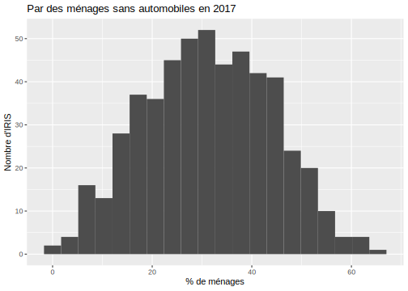
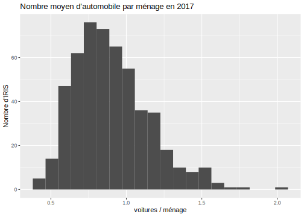
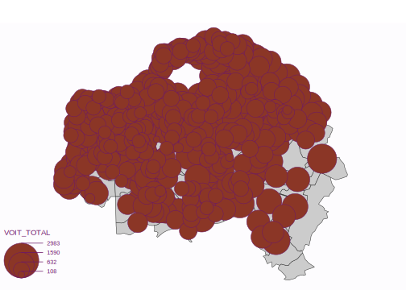
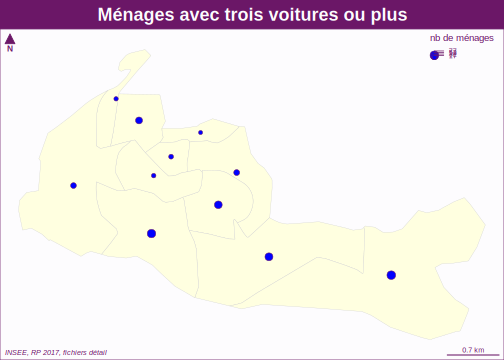
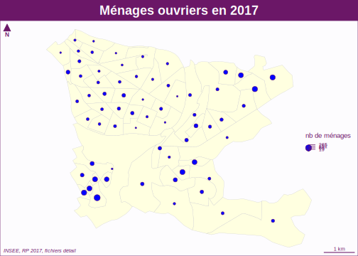

Chapitre 3 Analyse cartographique I (C.G.)
3.1 Introduction
L’objectif de cette section est
- d’apprendre à réaliser des cartographies statiques d’indicateurs relatifs aux unités spatiales à différentes échelles à l’aide du package
cartography. - de créer des fonctions permetant d’automatiser la tâche de cartographie à l’échelle des communes
3.1.1 Packages utilisés
Nous allons nous limiter à un nombre limité de packages
- dplyr et tidyr: pour la manipulation des tableaux et leur agrégation (inutile de charger l’ensemble du package tidyverse)
- knitr : pour afficher proprement les tableaux de résultats
- ggplot2 : pour visualiser les résultats sous formes de graphiques
- sf : pour manipuler les données cartographiques et les agréger
- cartography : pour la réalisation de cartes statiques de qualité imprimables aux formats .pdf ou .doc
3.1.2 Chargement des données
Nous avons besoin uniquement de trois fichiers
- Le fichier des individus
- le fichier des métadonnées relatives aux individus
- le fonds de carte des IRIS
3.2 Le package cartography
Le package cartography permet de réaliser des cartes statiques de très haute qualité. Il a en effet été mis au point par des cartographes et des géomaticiens professionnels. Il propose une gamme de possibilités sans équivalent. On ne verra ici qu’une toute petite partie de ses possibilités.
Nous allons prendre comme exemple l’analyse d’un tableau du nombre d’automobiles par ménage en nous limitant aux ménages ordinaires c’est-à-dire en excluant les personnes habitant dans des logements collectifs (pensionnats, prisons, congrégations religieuses, …)
Nous ne conservons que les individus chefs de ménages (LPRM=1) ce qui va logiquement éliminer les individus présents dans les ménages non ordinaires (LPRM=Z) ainsi que tous les membres d’un logement qui ne sont pas chefs de ménages.
3.2.1 Création du tableau de contingence
Nous souhaitons ventiler les ménages en fonction de leur localisation géographique (IRIS) et de leur nombre d’automobile (VOIT) en tenant compte de leur poids (IPONDI) puisque les données sont issues d’uin échantillonage qu’il faut redresser.
Cette opération se réalise très facilement à l’aide du package dplyr à l’aide des fonctions group_by, mutate et summarize :
`summarise()` regrouping output by 'IRIS' (override with `.groups` argument)tibble [2,070 × 3] (S3: tbl_df/tbl/data.frame)
$ IRIS : Factor w/ 4243 levels "751010101","751010102",..: 3300 3300 3300 3300 3301 3301 3301 3301 3302 3302 ...
$ VOIT : Factor w/ 5 levels "0","1","2","3",..: 1 2 3 4 1 2 3 4 1 2 ...
$ nbmen: num [1:2070] 674.1 679.5 142.2 29.5 801.4 ...# A tibble: 5 x 3
IRIS VOIT nbmen
<fct> <fct> <dbl>
1 940020101 0 674.
2 940020101 1 679.
3 940020101 2 142.
4 940020101 3 29.5
5 940020102 0 801. Le résultat est un tibble au format “long” qui comporte 4 lignes différentes pour chaque IRIS, correspondant aux nombres de ménages ayant respectivement 0, 1, 2 et 3 voitures ou plus.
Nous allons transformer ce tableau en format “large” pour placer côte à côte les différentes modalités du nombre de voitures. Pour cela il faut utiliser la fonction pivot_widerdu package tidyr.
library(tidyr)
tabcont <- tab %>% pivot_wider(names_from = VOIT,
values_from = nbmen,
names_prefix = "MEN_VOIT",
values_fill = 0)
head(tabcont)# A tibble: 6 x 5
IRIS MEN_VOIT0 MEN_VOIT1 MEN_VOIT2 MEN_VOIT3
<fct> <dbl> <dbl> <dbl> <dbl>
1 940020101 674. 679. 142. 29.5
2 940020102 801. 903. 170. 24.8
3 940020103 661. 703. 76.0 10.6
4 940020104 694. 701. 126. 23.0
5 940020105 434. 960. 237. 29.3
6 940020106 625. 735. 166. 29.2Grâce à cette transformation, nous disposons maintenant pour chaque IRIS de la distribution des ménages en fonction de leur nombre de voitures, ce qui constitue le tableau de contingence recherché.
3.2.2 Ajout d’un tableau de pourcentage
Nous allons maintenant calculer le nombre total de ménage puis en déduire la proportion de ménages en fonction de leur nombre d’automobile pour chacun des IRIS.
tabdon <- tabcont %>% mutate (MEN_TOTAL = MEN_VOIT0+MEN_VOIT1+MEN_VOIT2+MEN_VOIT3,
PCT_VOIT0 = 100* MEN_VOIT0 / MEN_TOTAL,
PCT_VOIT1 = 100* MEN_VOIT1 / MEN_TOTAL,
PCT_VOIT2 = 100* MEN_VOIT2 / MEN_TOTAL,
PCT_VOIT3 = 100* MEN_VOIT3 / MEN_TOTAL)
head(tabdon[,c(1,6:10)]) # A tibble: 6 x 6
IRIS MEN_TOTAL PCT_VOIT0 PCT_VOIT1 PCT_VOIT2 PCT_VOIT3
<fct> <dbl> <dbl> <dbl> <dbl> <dbl>
1 940020101 1525. 44.2 44.5 9.32 1.93
2 940020102 1899. 42.2 47.6 8.93 1.31
3 940020103 1450. 45.6 48.5 5.24 0.729
4 940020104 1544. 45.0 45.4 8.14 1.49
5 940020105 1660. 26.1 57.8 14.3 1.76
6 940020106 1555. 40.2 47.3 10.7 1.87 3.2.3 Estimation du nombre moyen d’automobile par menages
Il n’est pas possible d’estimer le nombre exact d’automobile par ménage car l’INSEE ne détaille pas la catégorie VOIT = 3 qui correspond à “Trois automobiles ou +”. On peut néanmoins procéder à une estimation minimale du nombre d’automobile en supposant que les ménages de ce type ont exactement rois automobiles. On en déduit alors le nombre total d’automobile par IRIS (VOIT_TOTAL) et le nombre moyen d’automobile par ménage (VOIT_MEN).
tabdon <-tabdon %>% mutate(VOIT_TOTAL = MEN_VOIT1 + 2*MEN_VOIT2 + 3*MEN_VOIT3,
VOIT_MEN = VOIT_TOTAL / MEN_TOTAL)
head(tabdon[,c(1,6,11,12)])# A tibble: 6 x 4
IRIS MEN_TOTAL VOIT_TOTAL VOIT_MEN
<fct> <dbl> <dbl> <dbl>
1 940020101 1525. 1052. 0.690
2 940020102 1899. 1317. 0.694
3 940020103 1450. 886. 0.611
4 940020104 1544. 1021. 0.662
5 940020105 1660. 1522. 0.917
6 940020106 1555. 1154. 0.7423.2.4 Analyse statistique
Avant de passer à la cartographie, on peut analyser quelques variables intéressantes.
3.2.4.1 Part des ménages sans automobiles
Les ménages sans automobiles sont une catégorie intéressante, même si elle peut recouper des situations très diverses (étudiants, personnes âgées, pauvres, …).
Min. 1st Qu. Median Mean 3rd Qu. Max.
0.00 21.94 30.95 31.13 40.84 65.31 ggplot(tabdon, aes(x=PCT_VOIT0)) +
geom_histogram(bins=20, fill="gray30") +
scale_y_continuous("Nombre d'IRIS")+
scale_x_continuous("% de ménages")+
ggtitle("Par des ménages sans automobiles en 2017")
La distribution apparaît très variable puisque les ménages sans automobiles sont absents de certains IRIS alors qu’ils représentent plus de la moitié des ménages dans d’autres IRIS.
3.2.4.2 Nombre moyen d’automobiles par ménage
Même s’il est légèrement sous-estimé, le nombre d’automobile par ménage est un bon indicateur de la dépendance de certains logements mals desservis par les transports en commun.
Min. 1st Qu. Median Mean 3rd Qu. Max.
0.3944 0.7190 0.8675 0.9003 1.0458 2.0000 ggplot(tabdon, aes(x=VOIT_MEN)) +
geom_histogram(bins=20, fill="gray30") +
scale_y_continuous("Nombre d'IRIS")+
scale_x_continuous("voitures / ménage")+
ggtitle("Nombre moyen d'automobile par ménage en 2017")
Alors qu’on trouve en général entre 0.6 et 1.2 automobiles par ménage, certains IRIS affichent des valeurs moyennes de 1.5 à 2 automobiles par ménage.
3.2.5 Sauvegarde du tableau et jointure avec le fonds de carte
On commence par effectuer une sauvegarde simple de notre tableau :
Puis on effectue une jointure avec le fonds de carte map_iris et on réalise une sauvegarde sous un autre nom.
Joining, by = "CODE_IRIS"3.2.6 Carte de stock
Une carte de stock représente la localisation de quantités que l’on peut aditionner et dont le total a un sens. Par exemple un nombre d’habitants, un nombre de ménages, un nombre d’automobiles. Ce quantités doivent être représentées par des figures (cercles, carrés, …) dont la surface est proportionelle au stock afin que l’oeil du lecteur puisse les aditionner visuellement.
Dans le package cartography, on réalise ce type de carte à l’aide de la fonction PropSymbolLayer et on complète l’habillage de la carte (titre, sources, auteur, …) à l’aide de la fonction layoutLayer
3.2.6.1 Distribution des ménages
map_com<-readRDS("data/map_com.Rdata")
map_iris<-readRDS("data/map_VOIT_IRIS.Rdata")
par(mar=c(0,0,2,0))
plot(map_iris$geometry, col="lightyellow", border="gray80",lwd=0.4)
plot(map_com$geometry, col=NA, border="gray40",lwd=0.8, add=T)
propSymbolsLayer(x = map_iris,
var = "MEN_TOTAL",
col="blue",
inches = 0.06,
legend.title.txt = "Nb ménages",
legend.pos = "left")
layoutLayer(title = "Distribution des ménages du Val de Marne en 2017",
author = "Master MECI / Option data mining",
sources = "INSEE, RP 2017, fichiers détail")
3.2.6.2 Distribution des automobiles
map_com<-readRDS("data/map_com.Rdata")
map_iris<-readRDS("data/map_VOIT_IRIS.Rdata")
par(mar=c(0,0,2,0))
plot(map_iris$geometry, col="lightyellow", border="gray80",lwd=0.4)
plot(map_com$geometry, col=NA, border="gray40",lwd=0.8, add=T)
propSymbolsLayer(x = map_iris,
var = "VOIT_TOTAL",
col="red",
inches = 0.06,
legend.title.txt = "nb. véhicules",
legend.pos = "left")
layoutLayer(title = "Distribution des automobiles des ménages du Val de Marne en 2017",
author = "Master MECI / Option data mining",
sources = "INSEE, RP 2017, fichiers détail")
3.2.7 Carte d’intensité (choroplèthe)
Une carte d’intensité représente un phénomène relatif dont la somme n’a pas de sens. Par exemple, il serait absurde d’aditionner les nombres d’automobiles par habitant des IRIS du Val de Marne. Ces variables d’intensité caractèrisent donc l’état général d’une zone (choros) at elles vont être représentées par une couleur appliquée à toute la surface de la zone, d’où leur nom de cartes choroplèthes.
La fonction u package cartography adaptée aux variables d’intensité est la fonction Chorolayer. Comme précédemment on la combine avec la fonction LayoutLayerpour réaliser l’habillage de la carte.
3.2.7.1 Part des ménages sans automobile
On va réaliser une carte allant du vert clair au vert foncé au fur et à mesure que le nombre de ménages sans automobiles augmente.
map_com<-readRDS("data/map_com.Rdata")
map_iris<-readRDS("data/map_VOIT_IRIS.Rdata")
par(mar=c(0,0,2,0))
mybreaks = c(0, 10, 20, 30, 40, 50, 60, 70)
mycols <-carto.pal(pal1 = "green.pal", n1 = 7)
choroLayer(x = map_iris,
var = "PCT_VOIT0",
breaks = mybreaks,
col= mycols,
lwd=0.2,
colNA = "gray80",
legend.title.txt = "% ménages",
legend.pos = "left",
legend.values.rnd = 2,
legend.nodata = "Pas de données")
plot(map_com$geometry, col=NA, border="gray10",lwd=0.8, add=T)
layoutLayer(title = "Part des ménages sans automobiles du Val de Marne en 2017",
author = "Master MECI / Option data mining",
sources = "INSEE, RP 2017, fichiers détail")
3.2.7.2 Nombre moyen d’automobiles par ménage
On va prendre comme référence la valeur de 1 automobile par ménage et on va construire une double palette qui se dirrige vers le brun lorsque le nombre d’automobile par ménage augmente et vers l’orange lorsque le nombre d’automobile par ménage diminue
map_com<-readRDS("data/map_com.Rdata")
map_iris<-readRDS("data/map_VOIT_IRIS.Rdata")
par(mar=c(0,0,2,0))
mybreaks = c(0.3,0.5, 0.6,0.7,0.8,0.9, 1,1.1, 1.2,1.3,1.4,1.5,2.1)
mycols <-carto.pal(pal1 = "green.pal", n1 = 6, pal2 = "orange.pal", n2 = 6)
choroLayer(x = map_iris,
var = "VOIT_MEN",
breaks = mybreaks,
col= mycols,
lwd=0.2,
colNA = "gray80",
legend.title.txt = "auto. / menage",
legend.pos = "left",
legend.values.rnd = 2,
legend.nodata = "Pas de données")
plot(map_com$geometry, col=NA, border="gray10",lwd=0.8, add=T)
layoutLayer(title = "Dépendance automobile des ménages du Val de Marne en 2017",
author = "Master MECI / Option data mining",
sources = "INSEE, RP 2017, fichiers détail")
3.2.8 Carte de stock + intensité
On peut combiner les deux modes cartographiques. Prenons à titre d’exemple le cas des ménages ayant trois automobiles ou plus. Onn peut décrire ce phénomène soit en terme de stock, soit en termes d’intensité.
Min. 1st Qu. Median Mean 3rd Qu. Max. NA's
0.00 12.50 21.42 26.20 33.77 145.76 9 Min. 1st Qu. Median Mean 3rd Qu. Max. NA's
0.000 1.170 1.943 2.510 3.160 16.114 9 On réalise les deux cartes successivement en commençant par la carte de taux puis en lui ajoutant la carte de stock par dessus.
map_com<-readRDS("data/map_com.Rdata")
map_iris<-readRDS("data/map_VOIT_IRIS.Rdata")
par(mar=c(0,0,2,0))
mybreaks = c(0, 1,2,4,8,17)
mycols <-carto.pal(pal1 = "taupe.pal", n1 = 5)
choroLayer(x = map_iris,
var = "PCT_VOIT3",
breaks = mybreaks,
col= mycols,
lwd=0.2,
colNA = "gray80",
legend.title.txt = "% ménages",
legend.pos = "topleft",
legend.values.rnd = 2,
legend.nodata = "Pas de données")
plot(map_com$geometry, col=NA, border="gray10",lwd=0.8, add=T)
propSymbolsLayer(x = map_iris,
var = "MEN_VOIT3",
col="red",
inches = 0.06,
legend.title.txt = "nb. ménages",
legend.pos = "left")
layoutLayer(title = "Nombre et proportion des ménages ayant 3 automobiles ou plus en 2017",
author = "Master MECI / Option data mining",
sources = "INSEE, RP 2017, fichiers détail")
3.3 Création de fonctions
L’objectif de cette section est de préparer des fonctions de cartographie qui pourront être intégrés dans une application shiny. On va pour cela reprendre les fonctions mises au point dans la partie statistiques et les coupler avec des procédures de cartographie. On se limitera dans l’immédiat à l’emploi des packages sfet cartography,mais on pourra par la suite créer d’autres fonctions fondées sur des packages tels que leaflet, plotlyou tmap…
3.3.1 fonction tab_cont_iris()
On va prendre comme point de départ la création d’un tableau de contingence spatial c’est-à-dire un tableau dont les lignes correspondent aux IRIS d’une commune et les colonnes aux modalités d’une variable de type factor.
On récupère les fonctions statistiques mises au point précédemment
On charge le fichier de données en lui ajoutant la variable LPRM_1 dont nous aurons besoin pour distinguer les données par ménage et pour l’ensemble de la population.
3.3.1.1 création du tableau avec la fonction tab_var
3.3.1.2 pivotage du tableau
On opére deux opérations de pivotage du tableau pour récupérer les valeurs brutes (raw) et les valeurs en % (pct).
tab_raw <- pivot_wider(data = tab %>% select(-pct),
names_from = VOIT,
values_from = n,
values_fill = 0)
names(tab_raw)[-1] <- paste("count_",names(tab_raw)[-1], sep="")
tab_pct <- pivot_wider(data = tab %>% select(-n),
names_from = VOIT,
values_from = pct,
values_fill = 0)
names(tab_pct)[-1] <- paste("pct_",names(tab_pct)[-1], sep="") 3.3.1.3 Ajout de la géométrie
On fusionne les deux tableaux précédents et bon effectue la jointure avec le fonds de carte, ce qui suppose de renommer la variable IRIS en CODE_IRIS.
tab_geo <- left_join(tab_raw, tab_pct) %>%
rename(CODE_IRIS=IRIS) %>%
left_join(map_iris) %>%
st_as_sf()Joining, by = "IRIS"Joining, by = "CODE_IRIS"3.3.1.4 Création d’une fonction unique
On reprend les étapes précédentes pour en faire une fonction unique appelée tab_cont_irisqui prend en entrée une variable quelconque de type factor et produit en sortie le tableau de contingence spatial soit par individu, soit par ménages.
tab_cont_iris <- function(data, codecom, list_mod, var)
{
# Create tab
tab <-tab_var(data, codecom, list_mod, {{var}}, IRIS)
# Pivot count
tab_raw <- pivot_wider(data = tab %>% select(-pct),
names_from = {{var}},
values_from = n,
values_fill = 0)
names(tab_raw)[-1] <- paste("count_",names(tab_raw)[-1], sep="")
# Pivot pct
tab_pct <- pivot_wider(data = tab %>% select(-n),
names_from = {{var}},
values_from = pct,
values_fill = 0)
names(tab_pct)[-1] <- paste("pct_",names(tab_pct)[-1], sep="")
# join with geom
tab_geo <- left_join(tab_raw, tab_pct) %>%
rename(CODE_IRIS=IRIS) %>%
left_join(map_iris) %>%
st_as_sf()
return(tab_geo)
}3.3.1.5 Test de la fonction
On peut tester la fonction sur la variable SEXE en effectuant un comptage :
- soit pour la population totale en prenant list_mod = “0”
Joining, by = "IRIS"Joining, by = "CODE_IRIS"# A tibble: 3 x 12
CODE_IRIS count_1 count_2 pct_1 pct_2 INSEE_COM NOM_COM IRIS NOM_IRIS
<chr> <dbl> <dbl> <dbl> <dbl> <chr> <chr> <chr> <chr>
1 940710101 620 718 46.3 53.7 94071 Sucy-e… 0101 Le Gran…
2 940710102 645 737 46.7 53.3 94071 Sucy-e… 0102 La Foss…
3 940710103 776 1018 43.3 56.7 94071 Sucy-e… 0103 La Cite…
# … with 3 more variables: TYP_IRIS <chr>, geometry <MULTIPOLYGON [m]>,
# DEPT <chr>- soit pour les chefs de ménage en prenant list_mod = “1”
Joining, by = "IRIS"Joining, by = "CODE_IRIS"# A tibble: 3 x 12
CODE_IRIS count_1 count_2 pct_1 pct_2 INSEE_COM NOM_COM IRIS NOM_IRIS
<chr> <dbl> <dbl> <dbl> <dbl> <chr> <chr> <chr> <chr>
1 940710101 474 338 58.4 41.6 94071 Sucy-e… 0101 Le Gran…
2 940710102 411 411 50 50 94071 Sucy-e… 0102 La Foss…
3 940710103 553 496 52.7 47.3 94071 Sucy-e… 0103 La Cite…
# … with 3 more variables: TYP_IRIS <chr>, geometry <MULTIPOLYGON [m]>,
# DEPT <chr>3.3.2 fonction map_count_iris
Nous allons créer différentes fonctions de cartographie selon que la variable à représenter est un stock (count_x) ou une intensité (pct_xx).
Dans l’immédiat nous allons nous limiter aux fonctions de base du package cartographymais ou pourra par la suite proposer d’autres solutions.
3.3.2.1 Objectifs
On prend comme entrée un tableau de contingence spatial et on décide de représenter l’une des modalités de type count. Soit par exemple la modalité 3 de la variable VOIT mesurée en nombre de ménages
Joining, by = "IRIS"Joining, by = "CODE_IRIS"par(mar=c(0,0,2,0))
plot(map$geometry, col="lightyellow", border="gray80",lwd=0.4)
propSymbolsLayer(x = map,
var = "count_3",
col="blue",
inches = 0.06,
legend.title.txt = "Nb ménages",
legend.pos = "topright")
layoutLayer(title = "Ménages avec trois voitures ou plus",
author = "Master MECI / Option data mining",
sources = "INSEE, RP 2017, fichiers détail")
3.3.2.2 Fonction minimale
On va maintenant créer une fonction ayant autant de paramètres que nécessaire pour pouvoir s’appliquer à n’importe quelle modalité de n’importe quelle variable. La fonction minimale devra comporter 5 paramètres
map_count_iris <- function (data,
codecom,
list_mod,
var,
mod,
titre)
{
mymap<-tab_cont_iris(data,codecom,list_mod,{{var}})
myvar <- paste("count_",mod, sep="")
if (list_mod==0) {myleg = "nb. d'habitants"} else
{myleg = "nb de ménages"}
par(mar=c(0,0,2,0))
plot(mymap$geometry, col="lightyellow", border="gray80",lwd=0.4)
propSymbolsLayer(x = mymap,
var = myvar,
col="blue",
inches = 0.06,
legend.title.txt = myleg,
legend.pos = "topright")
layoutLayer(title = titre,
author = "Master MECI / Option data mining",
sources = "INSEE, RP 2017, fichiers détail")
}On teste la fonction sur les ménages ayant plus de trois voitures à Sucy-en-Brie
map_count_iris(data = RP,
codecom = "94071",
list_mod = "1",
var = VOIT,
mod = 3,
"Ménages avec trois voitures ou plus")Joining, by = "IRIS"Joining, by = "CODE_IRIS"
On vérifie qu’elle marche également sur une autre commune comme Saint-Maur-des-Fossés (94068).
map_count_iris(data = RP,
codecom = "94068",
list_mod = "1",
var = VOIT,
mod = 3,
"Ménages avec trois voitures ou plus")Joining, by = "IRIS"Joining, by = "CODE_IRIS"
… ou bien sur une autre modalité d’une autre variable. Par exemple la distribution des ménages dont la personne de référence est ouvrier à Sucy-en-Brie
map_count_iris(data = RP,
codecom = "94071",
list_mod = "1",
var = CS1,
mod = 6,
"Ménages ouvriers en 2017")Joining, by = "IRIS"Joining, by = "CODE_IRIS"
3.3.2.3 Fonction améliorée
Vous pouvez maintenant améliorer la fonction en lui ajoutant d’autres paramètres variables tels que :
- la source
- l’auteur
- la couleur de remplissage des cercles
- la couleur d’arrière-plan des iris
- le zoom d’aggrandissement des cercles
- etc.
3.3.3 fonction map_pct_iris
Nous allons maintenant préparer un pogramme pour cartographier une variable d’intensité (pct_xx) dont la somme n’a pas de sens et qui doit donc utiliser le mode cartographique zonal (carte choroplèthe).
3.3.3.1 Objectifs
On prend comme entrée le tableau de contingence spatial qui a été transformé en profil en ligne avec des modalités de type pct. Comme nous allons devoir établir automatiquement des classes sans connaître la forme de la distribution, nous devons utiliser une solution robuste.
- La méthode des quantiles apparaît alors comme la plus adaptée puisqu’elle consiste à découper la distribution en classes d’effectifs égaux.
- Concernant le nombre de classes, il doit dépendre du nombre d’éléments (ici d’IRIS) et nous allons utiliser pour cela la formule de Huntsberger qui indique le nombre maximum de classes souhaitable (K) en fonction du nombre d’élément (n).
\(K = 1 + \frac{10}{3}.log_{10}(x)\)
On définit à partir de là une carte-type en prenant l’exemple du % de ménages n’ayant pas de voiture à Sucy-en-Brie
Joining, by = "IRIS"Joining, by = "CODE_IRIS"par(mar=c(0,0,2,0))
nbc<-huntsberger(nrow(map))
choroLayer( x = map,
nclass = nbc,
method = "quantile",
var = "pct_0",
legend.title.txt = "% ménages",
legend.pos = "topright",
legend.values.rnd = 1)
layoutLayer(title = "Ménages n'ayant pas de voiture",
author = "Master MECI / Option data mining",
sources = "INSEE, RP 2017, fichiers détail")
3.3.3.2 Fonction minimale
On va maintenant créer une fonction ayant autant de paramètres que nécessaire pour pouvoir s’appliquer à n’importe quelle modalité de n’importe quelle variable. La fonction minimale devra comporter 5 paramètres
map_pct_iris <- function ( data,
codecom,
list_mod,
var,
mod,
titre)
{
mymap<-tab_cont_iris(data,codecom,list_mod,{{var}})
myvar <- paste("pct_",mod, sep="")
if (list_mod==0) {myleg = "% des habitants"} else
{myleg = "% des ménages"}
huntsberger <- function(x) {round(1+(10/3)*log10(x))}
nbc<-huntsberger(nrow(map))
par(mar=c(0,0,2,0))
choroLayer( x = mymap,
var = myvar,
nclass = nbc,
method = "quantile",
legend.title.txt = myleg,
legend.pos = "topright",
legend.values.rnd = 1)
layoutLayer(title = titre,
author = "Master MECI / Option data mining",
sources = "INSEE, RP 2017, fichiers détail")
}On teste la fonction sur les ménages ayant plus de trois voitures à Sucy-en-Brie
map_pct_iris(data = RP,
codecom = "94071",
list_mod = "1",
var = VOIT,
mod = 3,
"Ménages avec trois voitures ou plus")Joining, by = "IRIS"Joining, by = "CODE_IRIS"
On vérifie qu’elle marche également sur une autre commune comme Saint-Maur-des-Fossés (94068).
map_pct_iris(data = RP,
codecom = "94068",
list_mod = "1",
var = VOIT,
mod = 3,
"Ménages avec trois voitures ou plus")Joining, by = "IRIS"Joining, by = "CODE_IRIS"
… ou bien sur une autre modalité d’une autre variable. Par exemple la distribution des ménages dont la personne de référence est ouvrier à Sucy-en-Brie
map_pct_iris(data = RP,
codecom = "94071",
list_mod = "1",
var = CS1,
mod = 6,
"Ménages ouvriers en 2017")Joining, by = "IRIS"Joining, by = "CODE_IRIS"
3.3.3.3 Fonction améliorée
Vous pouvez maintenant améliorer la fonction en lui ajoutant d’autres paramètres variables tels que :
- la source
- l’auteur
- la palette de couleur
- le nombre de classes
- le mode de découpage des classes
- etc.
3.3.4 Sauvegarde des fonctions
On sauvegarde les nouvelles fonctions dans un nouveau fichier mes_fonctions_V2.R qui comporte les fonctions statistiques précédents et les nouvelles fonctions cartographiques mises au point dans ce chapitre.